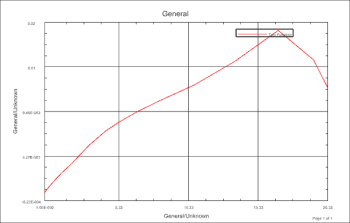

Create a graph using two functions
The strain data and the displacement data are stored as Record 1 and Record 2, respectively, in an AFU file. You can use the functions and graphing tools to create a plot of strain versus displacement.
 XY Function Navigator
XY Function Navigator
-
 Associated AFU
Associated AFU -
 Open
Open -
Files of type:
AFU Files (*.afu)

-
File name:
bottle_crush.afu
-
OK
-
 Associated AFU (expand)
Associated AFU (expand)
-
bottle_crush (expand)
-
AtNode1098
-
Ctrl
+
AtNode3001 -
Two Function→AtNode3001→AtNode1098
-
 Select Viewport by Cursor
Select Viewport by Cursor -
the NX Graphics window

The first record, AtNode1098 (strain) is plotted on the Y-axis and the second record AtNode3001 (displacement) is plotted on the X-axis.